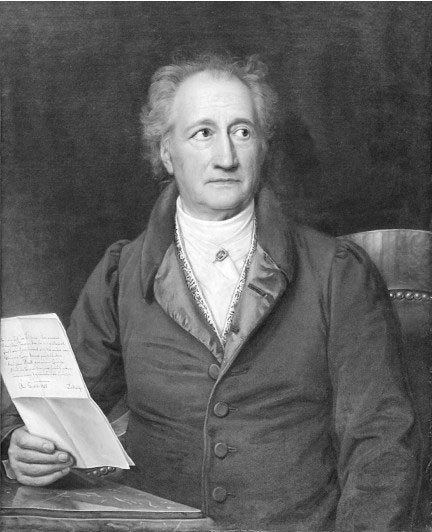
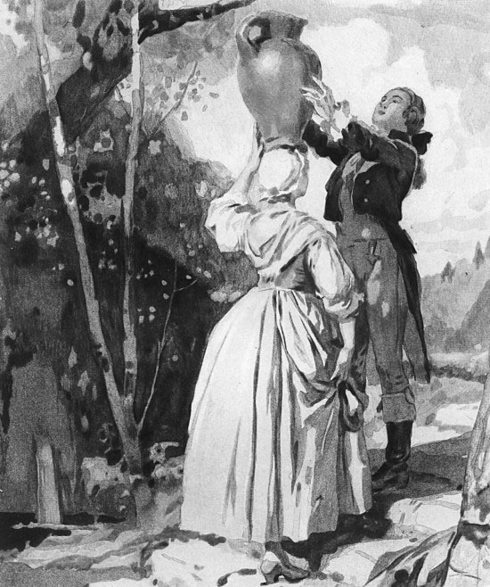
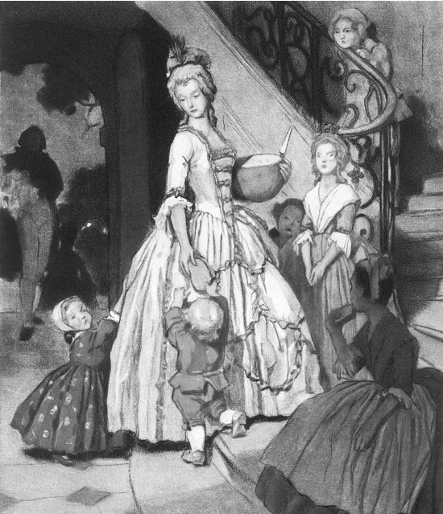

歌德《少年维特之烦恼》：名为爱的病
#歌德《少年维特之烦恼》：名为爱的病
每个人在自己少年时代都会有烦恼，我们最后也不得不面对解决，可维特的烦恼似乎有些不同，这个以爱为名的病让维特的生命永远停留在少年。
- 爱情究竟是什么，爱情是否需要合理，爱情是否是理智的？
- 理性和感性哪个让我们的生活更加快乐？
- 人为什么而活，又为什么而死？
+++
一.作者介绍以及背景分析
歌德
一七七四年，年仅25岁的歌德出版了他早年最重要的作品《少年维特之烦恼》，众人都知道歌德最伟大的作品《浮士德》，但《浮士德》阅读难度以及对于诗歌鉴赏力的要求让人望而生畏，于是我从他早年的这部《维特》出发，来了解歌德的思想。《维特》吸引我在于它出现在了欧洲从封建主义向资本主义的过渡，但是羽化成蝶何其艰难，歌德所在城市虽然发达，但依旧保留着封建等级制度和其它陋习。歌德的父亲尽管家产丰富，学识渊博，但依旧被贵族所蔑视，于是他花钱买了一个皇家顾问的闲职，终日在家，并将尽力放在家庭以及对子女教育上，因而歌德一方面享受良好的教育，另一方面让他对封建等级制度和腐败的贵族阶级产生厌恶。本书的女主角绿蒂来源于现实中歌德在一次乡村舞会上认识并爱上了的一位天真可爱的少女夏绿蒂，但不幸的是夏绿蒂和他朋友克斯特纳尔已经订婚，这让歌德非常痛苦，并产生了自杀的念头。四个月后歌德不辞而别，回到法兰克福，但又听到一个名叫耶路撒冷的青年自杀的噩耗。这人是歌德大学同学，两人有过接触，其自杀的原因是喜欢上了同事的妻子遭到拒绝，工作中又被上司苛责，在社交会所又被贵族侮辱。此事让歌德大为震撼，这也正是《维特》来源所在，后面歌德爱上马克西米琳娜，她才十八岁却嫁给比她大二十岁的富商，歌德和她相谈甚欢，可由于其丈夫的嫉妒，与歌德产生激烈冲突。在这种情况下，歌德极其愤怒，将这两年辗转波折的郁气与痛苦全部写在纸上，最终促使《少年维特之烦恼》的诞生。
+++
二.原文鉴赏与分析
本文通过第一人称书信体呈现，是维特写给他朋友威廉的信，文中并没有呈现威廉的回信内容，反而更多的将笔墨留给维特去讲述他的故事与想法。
维特未遇绿蒂时
人们要是不这么没完没了地运用想象力去唤起昔日痛苦的回忆——上帝才知道为什么把人造成这个样子——而是多考虑考虑如何挨过眼前的话，人间的痛苦本来就会少一些的
过去的痛苦已然无法改变，反复咀嚼那些，我们的当下依然痛苦，不如忘记过去，享受当下的每一刻。
谁如果觉得自己有必要疏远所谓下等人以保持尊严，那他就跟一个因为怕失败而躲避敌人的懦夫一样可耻
维特是一个有钱家的“少爷”，他知道他和别人不一样，但他对那些对平民百姓冷淡疏远的所谓有地位的人嗤之以鼻，”似乎一接近就会失去什么来着“。
维特帮使女顶水瓮
多数人为了生活，不得不忙忙碌碌，花去大部分时间；剩下一点点余暇却使他们犯起愁来，非想方设法打发掉不可。这就是人类的命运啊
我从这段文字中深有体会，正像叔本华所言**“人生就像摆钟，在无聊与痛苦中摆来摆去”**，如果人生仅仅是繁忙然后打发闲暇的时间，那也太无趣了些。
我常常看见人的一切活动，都是为了满足某些需要，而这些需要除去延长我们可怜的生存，本身又毫无任何目的。
我们满足一切的需要，食欲也罢，性欲也罢，延长了我们的生命，满足我们的需要，可却无法超脱本身，给我们生命带来激情与幸福。
那些能像小孩儿似的懵懵懂懂过日子的人，他们是最幸福的。
他们给自己的无聊勾当以至欲念想出种种漂亮称呼，美其名曰为人类造福的伟大事业；他们也是幸福的。
· 只要看见这样一个心平气和的人，我便可安定下来。这种人乐天知命，过一天是一天，看见树叶落时，只会想“冬天快到啦”，除此就别无思虑。
纯真的，活在当下的人是幸福的，他们无忧无虑，为生活而活，为幸福，为快乐而活；那些赋予自己人生意义的人同样是幸福的，他们有自己的人生理想，即使在宏观的宇宙中不值一提，但在他的人生中，这就是全部了。
好朋友，我给你打个比方好吗？比如谈恋爱。一个青年倾心于一个姑娘，整天都厮守在她身边，耗尽了全部精力和财产，只为时时刻刻向她表示，他对她是一片至诚。谁知却出来个庸人，出来个小官僚什么的，对他讲：“我说小伙子呀！恋爱嘛是人之常情，不过你也必须跟常人似地爱得有个分寸。喏，把你的时间分配分配，一部分用于工作，休息的时候才去陪爱人。好好计算一下你的财产吧，除去生活必需的，剩下来我不反对你拿去买件礼物送她，不过也别太经常，在她过生日或命名日时送送就够了。”——他要听了这忠告，便又多了一位有为青年，我本人都乐于向任何一位侯爵举荐他，让他充任侯爵的僚属；可是他的爱情呢，也就完啦，倘使他是个艺术家，他的艺术也完啦。朋友们啊！你们不是奇怪天才的巨流为什么难得激涨汹涌，奔腾澎湃，掀起使你们惊心动魄的狂涛吗？——亲爱的朋友，那是因为在这巨流的两边岸上，住着一些四平八稳的老爷，他们担心自己的亭园、花畦、苗圃会被洪水冲毁，为了防患于未然，已及时地筑好堤，挖好沟了。
在本段，歌德展现了他在这部书中最核心的思想：人是感性，浪漫，自然，真实的产物。 一切清规戒律，都在破坏人对自然真实的感受。正如上面所言，我们似乎应当遵从理性，正如小官所言：爱情只是生活的一部分，要把握分寸。可把握分寸之后我们难道就会幸福吗？似乎一切的幸福都需要分寸，需要适度，可这样的人生真的很幸福吗。在我看来不是的，我只能在这种平淡或是氤氲暧昧的氛围中想象着冲动，破坏与激情这可怕的让人畏惧的情绪。可实际上，我们依旧没有任何变化，哪怕到死，我们似乎也活在那理性的枷锁，到头来，什么是激情，什么是超越，我们一无所知，那是魔鬼，那时地狱。
啊，可悲的人儿，我们什么时候才能挣脱自己带给自己的枷锁，我们明明可以与天空共鸣，与海洋合唱。“小心危险，大还会吞掉你的”“你要如此，以后再也不带你玩罢”“你在做什么白日梦”这些才是恶魔的吟唱，它们让你失去对激情对未知的向往与渴求。
然而诗也罢，场面也罢，田园牧歌也罢，统统有什么意义呢？难道我们亲身经历了自然现象还不够，还非得来一个依样画葫芦不可吗
或许是对美好事物的留恋，或者与其共鸣的喜悦。
维特初见绿蒂时
 绿蒂和她的弟弟妹妹
绿蒂有八个弟弟妹妹要照顾，她像一个慈爱的母亲一般，但同时依旧对生活充满热情与朝气，是一个活泼可爱的少女。
既然眼下我很少有工夫再读书，那我读的书就必须十分对我的口味。我最喜欢的作家必须让我能找到我的世界，他书里写的仿佛就是我本人，使我感到那么有趣，那么亲切，恰似在我自己家里的生活，它虽然还不像天堂那么美好，整个看来却已是一种不可言喻的幸福的源泉。
这便是绿蒂，真诚而又纯洁，并没有将照顾弟弟妹妹作为拖累，反而感到幸福。
可是，当我们真的赶上去，当那儿成了这儿，当未来的一切仍一如既往，唉！我们就发现自己仍然平庸，仍然浅陋；我们的灵魂仍然焦渴难当，切盼着吸吮那已经流走了的甘霖。
我们在完成一个又一个我们日思夜想想要实现的目标的时候，发现即使完成，人生依旧，我们对于成功，对于征伐的欲望永远无法得到满足。
每当我从旁观察他们，从细小的事情中发现他们有朝一日所需要的种种品德与才能的萌芽，从他们今日的固执任性中看出将来的坚毅与刚强，从今日的顽皮放肆中看出将来的幽默乐观以及轻松愉快地应付人世危难的本领，每当我发现这一切还丝毫未经败坏，完整无损，我便一次一次地，反反复复地，吟味人类的导师这句金言：“可叹呀，你们要是不能变成小孩子的样子！
孩子才具有世界上最纯粹，最无暇的品质，可大人永远想要规训他们，破坏那种纯真，可拥有权力的确实是那些大人，可他们早已被玷污，或者麻木罢。